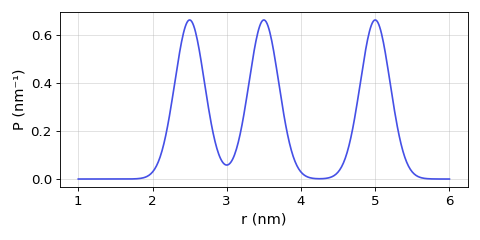

deerlab.dd_gauss3¶
- dd_gauss3 = <deerlab.model.Model object>¶
Sum of three Gaussian distributions model
- Parameters
- rarray_like
Distance axis, in nanometers.
- mean1scalar
1st Gaussian mean.
- std1scalar
1st Gaussian standard deviation.
- mean2scalar
2nd Gaussian mean.
- std2scalar
2nd Gaussian standard deviation.
- mean3scalar
3rd Gaussian mean.
- std3scalar
3rd Gaussian standard deviation.
- amp1scalar
1st Gaussian amplitude.
- amp2scalar
2nd Gaussian amplitude.
- amp3scalar
3rd Gaussian amplitude.
- Returns
- Pndarray
Distance distribution.
Notes
Parameter List
Name
Lower
Upper
Type
Frozen
Unit
Description
mean11
20
nonlin
No
nm
1st Gaussian mean
std10.05
2.5
nonlin
No
nm
1st Gaussian standard deviation
mean21
20
nonlin
No
nm
2nd Gaussian mean
std20.05
2.5
nonlin
No
nm
2nd Gaussian standard deviation
mean31
20
nonlin
No
nm
3rd Gaussian mean
std30.05
2.5
nonlin
No
nm
3rd Gaussian standard deviation
amp10
inf
linear
No
1st Gaussian amplitude
amp20
inf
linear
No
2nd Gaussian amplitude
amp30
inf
linear
No
3rd Gaussian amplitude
Model
where are the mean distances,
 the standard deviations, and are the amplitudes of the Gaussians.
the standard deviations, and are the amplitudes of the Gaussians.Examples
Example of the model evaluated at the start values of the parameters:
(Source code, png, hires.png, pdf)

{kind=link}
{kind=link}